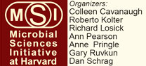

News Archives : 2008 : Microbial Science Symposium to be Held Saturday, April 5
by Christy Herren
April 7, 2008
Microbes (including bacteria, viruses, fungi, and protists) are ubiquitous on Earth and affect every part of our lives, yet they are mostly invisible. Microbial scientists believe the vast majority of microbes are still unknown to us. On Saturday, April 18, Harvard Microbial Sciences Initiative will host the Sixth Annual Microbial Sciences Symposium, an all-day event free and open to the public, to be held in the Radcliffe Gymnasium at the Radcliffe Institute for Advanced Studies on the Cambridge campus. Eight prominent microbial scientists haling from a wide variety of disciplines are invited to share their investigations into these enigmatic microbes. This event will “stimulate discussion among members of the scientific community and help strengthen integrative science programs,” says Kolter.
The Symposium is the largest and most visible event sponsored by the Microbial Sciences Initiative (MSI) at Harvard, an interdisciplinary program focused on understanding the microbial world. Co-directed by Colleen Cavanaugh (OEB) and Roberto Kolter (Microbiology and Molecular Genetics, HMS), the MSI links researchers in FAS with SEAS, Harvard Medical School, and Harvard Public School of Health.
The Symposium topics reflect the enormous value MSI places on interdisciplinary research spanning fields of molecular biology, engineering, physics, oceanography, evolutionary biology, environmental microbiology and microbial ecology. MCB Professor Howard Berg, both a physicist and biologist, will discuss how light can be used to probe the complex motility machinery of the bacterial “lab workhorse” Escherichia coli. SEAS Professor Colleen Hansel, with extensive knowledge of biogeochemical cycling and environmental biological remediation, studies the many varied roles that microbes can play in the mineralization of metals such as arsenic.
Kevin Foster (Center for Genomic Research) asks us to ponder if microbes can be considered social organisms that have evolved to cooperate in certain situations. The beautiful icon for this year's Symposium poster is a microscope image of a biofilm - a very common type of 'social situation' in which a community of bacteria arranged in layers on a surface (such as our teeth) is in constant communication with each other to survive. Michael Starnbach (HMS) and Greg Hurst (Univ. of Liverpool) will relate how certain species bacteria have evolved to manipulate their hosts- via the immune system in humans and in reproductive strategies called 'male-killing' in some insects.
Martin Polz (MIT) makes the connects between oceans and human health by studying bacterioplankton in coastal oceans from the community scale down to the intricacies of individual genomes in Vibrio species, some of which are pathogenic. Both Kit Pogliano (UCSD) and Adam Kuspa (Baylor College of Medicine) both investigate cellular differentiation and signaling but with different microbial models. Kuspa investigates the recognition of bacteria by amoeba, perhaps a common evolutionary origin for bacterial recognition by eukaryotes. Pogliano asks how Bacillus subtilis, a soil microorganism that forms spores in times of nutritional stress, orchestrates the complex membrane biosynthesis and fusion to develop the extremely durable spore.
The MSI Symposium will be held from 8:45am - 5:00pm on Saturday, April 5, in Science Center Lecture Hall C. A reception outside the hall will follow.
